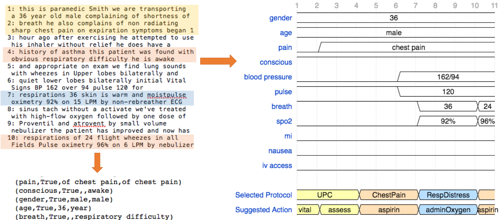

Dependable Systems and Analytics Group (UVA-DSA)
Our group is currently working on the following research projects funded by the U.S. National Science Foundation (NSF), the National Institue of Standards and Technology (NIST), UVA Health System, and UVA Engineering (SEAS).
We are looking for self-motivated students with interests and expertise in dependable computing and fault-tolerance, systems security, cyber-physical systems, and data analytics to join our group.
● Resilient Cyber-Physical Systems for Robotic Surgery
The goal of this project is to address challenges in detection and mitigation of safety incidents in robotic surgery through:
(i) in-depth analysis of incident causes, which takes into account the interactions among the system components, human operators, and patients;
(ii) resiliency assessment of the robotic surgical systems in the presence of realistic safety hazards, accidental failures, and malicious tampering with system;
(iii) continuous monitoring for detection of safety and security violations and ensuring patient safety;
(iv) simulation-based safety training to prepare surgical teams on dealing with unexpected failures.
Hazard Simulation: Sudden Jump
● Cognitive Assistant Systems for Emergency Response
This project focuses on the next generation first responder technology that improve situational awareness and safety in emergency response.
The main goal is to develop a wearable cognitive assistant system that combines the following key components:
(i) Resilient data analytic algorithms for collecting heterogeneous data streams from incident scene, aggregating it with knowledge sources and publicly available data, and transforming it into accurate and actionable feedback to first responders
(ii) Anytime real-time sensing and computing resources that are dynamically optimized to enable continuous data processing on responder-worn edge devices, even in presence of unexpected events, such as failures or network disconnection.

● Resilience-by-Construction Design of Medical Devices
The advances in low-power and highly integrated technology provide enormous opportunities for the deployment of implantable medical devices (IADs) and body area networks (BANs).
However, the significant increase in device complexity, resource constraints, and shrinking time to market has created major challenges in handling the reliability, patient safety, and security of these devices.
This project investigates development of a generalized model-based fault-tolerance technique that uses the principle of “resilience-by-construction” for design of next generation IMDs and BANs.
● Dependable and Secure Artificial Intelligence
In this project we investigate design and validation of resilient (reliable, safe, and secure) autonomous systems that rely on artificial intelligence and machine learning algorithms for control and decision making.
We are particularly interested in designing context-aware safety monitoring and recovery mechanisms and testing and certification techniques for machine learning systems, with applications to autonomous cyber-physical systems.